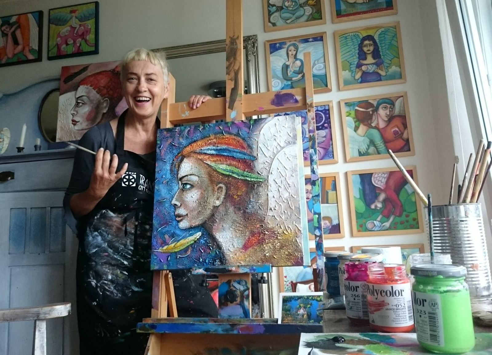
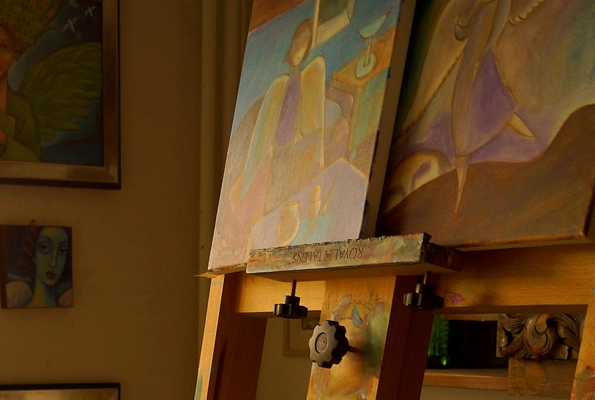

O mnie
Lilianna Batory i jej pracownia

Grafika i malarstwo to moje największe pasje
Nazywam się Lilianna Batory, a Galeria Lilu to moja pracownia w Zielonej Górze, przy ulicy Objazdowej. Maluję obrazy i portrety na zamówienie.
Ulubiony temat to anioły, ale inne od tych, o których uczą mity czy religie. Moje anioły mają ludzkie twarze, marzenia i problemy.
Stworzyłam między innymi cykl 366 obrazów „Anioł Stróż na każdy dzień roku”. Zapraszam do rozmowy o Twoim Aniele Stróżu. Takim, który ochroni, doda odwagi i będzie czuwał nad bliskimi.

W pracowni
Tu powstają wszystkie obrazy. Możesz je obejrzeć na miejscu.


Szukasz obrazu dla siebie albo na prezent?
Zadzwoń i umów się na rozmowę o obrazie albo na wizytę w pracowni.
504 202 547
Codziennie 9:00–21:00 · albo napisz SMS